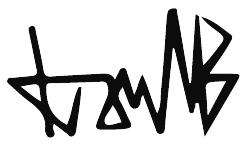

Você está sendo convidado a participar da pesquisa realizada na Universidade Federal de Minas Gerais - UFMG, no Programa de Pós-Graduação em Música intitulada “Tecnologias de Extração e Processamento de Informações Musicais em Musicoterapia: Microanálises de Vestígios Musicais e possíveis interfaces com a Cognição Social”. Sua participação é importante e voluntária e contribuirá com informações que serão úteis para indicar melhores tratamentos musicoterapêuticos e para o entendimento de como os recursos tecnológicos podem ser utilizados para desenvolver pesquisas e intervenções musicoterapêuticas. Os objetivos deste estudo são: 1) Verificar a viabilidade de utilização de ferramentas tecnológicas para a coleta e análise de dados da produção musical na avaliação em Musicoterapia; 2) Desenvolver uma revisão de literatura sobre coleta e análise de improvisações musicais e suas interfaces com a cognição social; 3) Desenvolver uma ferramenta tecnológica para a coleta e análise de dados da produção musical que auxiliem no processo de interpretação e tomada de decisões na prática clínica musicoterapêutica; 4) Desenvolver estudos iniciais de validação de face, conteúdo e construto do uso de recursos tecnológicos, relacionando habilidades e competências musicais e cognição social; 5) Cartografar a utilização de ferramentas tecnológicas por musicoterapeutas e pesquisadores no Brasil e na América Latina. Você será convidado a responder um questionário online e a uma escala de níveis de ansiedade, estresse e depressão. Depois você participará presencialmente de algumas tarefas musicais envolvendo sincronização e percepção do tempo musical. As tarefas musicais serão realizadas em uma única sessão com duração aproximada de trinta minutos em um Laboratório na UFMG. Você realizará as tarefas uma vez, não sendo necessário conhecimento prévio sobre o uso dos equipamentos musicais utilizados. Esses procedimentos oferecem risco mínimo à saúde, tais como eventual cansaço ou desconforto em alguma pergunta dos questionários ou participação das tarefas musicais. Fica assegurado o seu direito de desistir de participar da pesquisa a qualquer momento, sem nenhum prejuízo a sua pessoa. Esta pesquisa não lhe trará benefícios diretos. Não há despesas pessoais para o participante como exames ou consultas, assim como não há nenhum tipo de compensação financeira pela sua participação na pesquisa. É garantido o direito a indenização por eventuais danos decorrentes da pesquisa, pelo pesquisador. A pesquisa poderá, no entanto, trazer benefícios para a ampliação e sistematização do uso de meios tecnológicos digitais para coleta de informações musicais durante atendimento musicoterapêutico. Fica assegurado o seu direito à confidencialidade das informações, não sendo divulgada nenhuma identificação pessoal dos participantes da pesquisa. Fica garantida a orientação acerca dos procedimentos e do andamento da pesquisa, bem como dos dados obtidos a partir do material analisado. Os dados e o material das avaliações serão utilizados somente para fins desta pesquisa e de apresentações em congressos e palestras, guardando a identidade dos sujeitos avaliados. A condução desta pesquisa observa o que está disposto na Resolução CNS/MS 510/16 e na Resolução CNS/MS 466/2012 do Conselho Nacional de Saúde/Ministério da Saúde. Este termo seguirá em duas vias, sendo que uma será entregue a você. Os dados ficarão armazenados pelo período de 10 anos no Laboratório de Musicoterapia da UFMG, sem qualquer identificação que conecte os seus dados a você. Acredito ter sido suficientemente informado sobre a descrição da pesquisa que li ou que foi lida para mim, descrevendo o estudo “Tecnologias de Extração e Processamento de Informações Musicais em Musicoterapia: Microanálises de Vestígios Musicais e possíveis interfaces com a Cognição Social”. Eu discuti com Ivan Moriá Borges Rodrigues sobre a minha decisão em participar nesse estudo. Ficaram claros para mim quais são os propósitos do estudo, os procedimentos a serem realizados, as garantias de confidencialidade e de esclarecimentos permanentes. Ficou claro também que minha participação é isenta de despesas. Concordo voluntariamente em participar deste estudo e poderei retirar o meu consentimento a qualquer momento, sem penalidades ou prejuízo.
Participante:
Pesquisador: Ivan Moriá Borges
Assinado por: _____________________